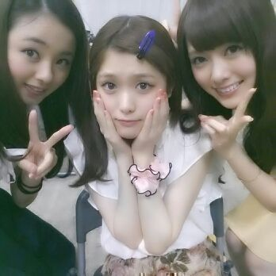
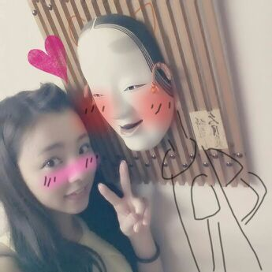

はーい☆☆☆
Rottyだよ！！

ろってぃ- さゆりん まいやん.
３つ上のお姉たま〜) ) )
あっ( *o*)/
さゆりん 触角ない。
手でおさえてる。ぃやん
あっ、そ-だそ-だ(*´▽`*)/
個別握手会の第9回目の受付中です☆
7月30日（火）15：00〜
8月1日（木）14：00
明日の 14時までです！
初めての方も全然きてくださいね(*^^*)
全然 緊張とかせずに
まひろと握手する時は
何もきにせずラフにきてくださ〜い\(´▽`)/
もし間に合わなかったら
またすぐに 受付期間があるので
焦らずにね ^^

昨日は 生写真撮影をやってきました！！
あっ 笑
この写真はまったく関係ないよ(´▽`)/
秋田でキリタンポ食べてる時に
横の壁におったから
一緒に撮ってもらった ！
たくさん着るから
結構時間かかっちゃうんだけど
あいかわらず、
まひろと せいたんは
めっちゃ集中してやるので
1番に全て撮り終わりました！
こんなに早く終わるなんてっ、、、
とゆ-ことで2人で
「お先に失礼しまぁ〜す、
お疲れ様でしたぁ〜( ＾∀＾)」
仕事終わりに 映画を観に行きました！
最近話題の『モンスターズユニバーシティ』☆
とっても可愛かったです.
個人的になめくじのシーンが。。
見に行った方には伝わるはず(*▽*)/
それにしても 昨日のNOGIBINGOの
幼虫は強烈でした\(*ω*)/
収録の時 自分でも分かる位
手が震えてました^^
頑張って食べたど。
高速ベロってぃー あはん。
とりあえず 幼虫が
餃子のかわなわけがないです^ ^ /
皆さんも召し上がれ\(*▽*)/
ほいぢゃね〜ん( 〃▽〃)
おやすみなさい... ろってぃ-でした☆